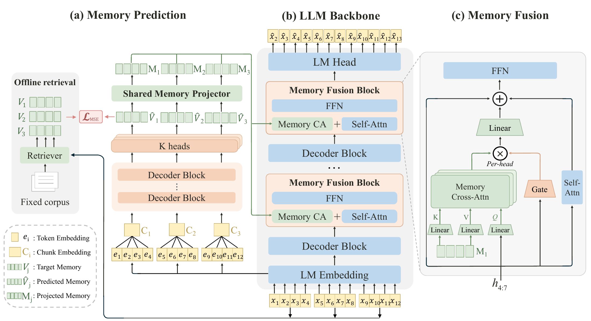

Research & Projects科研与项目
My research focuses on developing new methods and insights, while my projects emphasize the implementation, evaluation, and application of existing approaches. 我的科研工作侧重于提出新方法与新认识，项目则侧重于已有方法的实现、评估与应用。
Research科研
Deep Fusion Memory: Chunk-Level Parametric Memory Deep Fusion Memory：chunk-level 参数化记忆
Research question. How can an LLM acquire external knowledge efficiently and use it during generation? Continued pretraining can cause forgetting, while retrieval-augmented generation adds online search overhead. Deep Fusion Memory (DFM) learns external knowledge in an added memory module and integrates it into a frozen LLM's internal computation. 研究问题：如何让大语言模型高效学习外部知识，并在生成过程中有效利用？继续预训练可能造成知识遗忘，而检索增强生成需要承担在线搜索开销。Deep Fusion Memory（DFM）通过新增记忆模块学习外部知识，并将其融入冻结大语言模型的内部计算。
Core method. A causal memory predictor uses preceding context to predict continuous memory vectors for each chunk, supervised by offline-retrieved chunk embeddings. Tokens within a chunk share this memory; gated cross-attention injects it into selected intermediate decoder layers. Memory prediction and fusion are trained jointly with memory-supervision and language-modeling objectives, while the backbone stays frozen. Inference requires no explicit retrieval. 核心方法：因果记忆预测器根据前文，为每个文本块预测连续记忆向量，并以离线检索得到的文本块嵌入作为监督。同一块内的词元共享记忆，再通过门控交叉注意力将其注入选定的解码器中间层。记忆预测与融合模块在记忆监督和语言建模目标下联合训练，主模型保持冻结；推理时无需显式检索。

Main results. Across six QA tasks, DFM improves the average score over the strongest baseline by 12.71% on Mistral-7B-v0.3 and 11.19% on Qwen3-8B-Base. Adaptation across code, mathematics, and law yields average gains of 6.51 and 4.38 points over Qwen3-4B-Base and Qwen3-8B-Base. Compared with token-level parametric memory, training-data construction requires 32× fewer retrieval queries and 2048× fewer retrieved items. 主要结果：在六项问答任务上，DFM 相较最强基线的平均得分，在 Mistral-7B-v0.3 和 Qwen3-8B-Base 上分别相对提升 12.71% 和 11.19%。在代码、数学与法律领域适应中，相较 Qwen3-4B-Base 和 Qwen3-8B-Base，平均提升 6.51 和 4.38 分。与词元级参数化记忆相比，训练数据构建所需的检索查询量降至 1/32，检索条目量降至 1/2048。
Under review at ICLR 2027.ICLR 2027 审稿中。 [PDF]
AnchorQE: Better Integration for Dense Query Expansion AnchorQE：面向稠密检索的查询扩展整合
Research question. Why can LLM-generated query expansions hurt a frozen dense retriever? By holding generated text fixed and varying only its integration, this work shows that retrieval quality depends on how expansions enter the retriever, as well as what the LLM generates. Expansion-only retrieval can lose the original intent, while text concatenation entangles the query and expansion without explicitly controlling their influence. 研究问题：为什么大语言模型生成的查询扩展，反而可能降低冻结稠密检索器的效果？通过固定生成文本、仅改变整合方式，本研究表明：检索质量不仅取决于生成内容，也取决于扩展如何接入检索器。仅使用扩展可能丢失原始意图，而文本拼接将查询与扩展混合编码，无法显式控制二者的影响。
Core method. AnchorQE separately encodes the original query and expansion, then interpolates their normalized vectors with the query as an explicit anchor. An unsupervised online strategy estimates the expansion weight from a small unlabeled stream prefix, assigning greater trust when expansions retrieve strongly and agree with the query's retrieved evidence. After calibration, each query uses one combined vector and one index request, without retraining the retriever or rebuilding its index. 核心方法：AnchorQE 分别编码原始查询与扩展，再对归一化向量进行插值，以原始查询作为显式锚点。无监督在线策略利用查询流开头的一小部分无标签查询估计扩展权重；只有当扩展的检索能力较强，且与原始查询检索到的证据一致时，才赋予较高信任。校准后，每个查询仅使用一个融合向量、发起一次索引检索，无需重新训练检索器或重建索引。
Main results. Across TREC-DL, LoTTE, and BEIR, AnchorQE improves retrieval effectiveness by up to 12.89% over expansion-only or text-concatenation baselines, using the same generated expansions. Online weight estimation also outperforms a fixed weight tuned on a development partition by up to 3.81%, without task-specific training or relevance labels for calibration. 主要结果：在 TREC-DL、LoTTE 与 BEIR 上，使用相同的生成扩展，AnchorQE 相较仅使用扩展或文本拼接的基线，检索有效性最高相对提升 12.89%。在线权重估计相较在开发集上调优的固定权重，最高相对提升 3.81%，且无需任务特定训练或用于校准的相关性标注。
Projects项目
Investigated domain adaptation and fine-tuning strategies for the RoBERTa-base model to classify emotions in figurative texts such as poetry and song lyrics. We implemented a two-stage training pipeline that transferred emotional priors from large-scale social media data to the complex, metaphor-rich domain of creative writing. By systematically comparing four parameter-update strategies—including LoRA and full fine-tuning—the study revealed that full fine-tuning yields the best performance (Poem F1≈0.60) for capturing deep semantic relationships and figurative language. 研究了 RoBERTa 基础模型在诗歌和歌词等比喻性文本情感分类中的领域自适应与微调策略。实现了一套两阶段训练流水线，将大规模社交媒体数据的情感先验知识迁移至蕴含丰富隐喻的文学创作领域。通过系统性对比 LoRA 和全量微调等四种参数更新策略，研究发现全量微调在捕捉深层语义关系和比喻性修辞方面表现最优（诗歌数据集 F1≈0.60）。
Developed an Inverse Reinforcement Learning (IRL) framework to infer dense, intermediate reward functions from expert chess demonstrations to overcome the temporal credit assignment problem in sparse terminal rewards. We constructed a custom Gymnasium environment and a ResNet-based reward model to map temporally stacked board states to scalar evaluative signals. Through saliency map analysis, the project demonstrated that CNN-based IRL is particularly effective at capturing "visual" strategic patterns and human-like positional intuition compared to pure engine calculation.
开发了一套对抗性逆强化学习（IRL）框架，从专家棋谱中推断稠密的中间奖励函数，以解决稀疏终端奖励带来的信用分配难题。构建了自定义
Developed a machine learning pipeline for the Brain-to-Text '25 competition to decode neural activity into natural language for patients with ALS. Implemented a two-stage hybrid Encoder-Decoder framework coupling a BERT-based encoder with a pre-trained GPT-2 decoder. Applied Masked Phoneme Modeling (MPM) and LoRA fine-tuning, achieving a Word Error Rate (WER) of 12.4%, and engineered a Day-Specific Adaptation Layer to handle non-stationary neural signals. 为 Brain-to-Text '25 竞赛开发了机器学习流水线，将 ALS 患者的神经活动解码为自然语言。实现了结合掩码音素建模（MPM）和 LoRA 微调的 BERT-GPT-2 混合框架，达到了 12.4% 的词错误率（WER），并设计了特定于日期的自适应层以处理非平稳神经信号。
Cache(d) Compression: Increasing Effective Storage within RISC-V
Explored transparent "ZipCache-style" compression on RISC-V architectures (Rocket Chip, BOOM, and VexRiscv) to increase effective DRAM cache capacity without altering the memory hierarchy. Using Chipyard-based simulations, we modeled 4 KB compressed pages with a 2x effective capacity gain and an estimated 15-cycle decompression latency implemented via RoCC-style paths or software NOP stalls. The results indicated that the compressed cache roughly halved miss rates and doubled throughput under heavy capacity pressure by avoiding high-latency SSD-backed misses (500 cycles). This project highlights the architectural trade-offs between decompression overhead and cache hit rates in memory-constrained environments. 在 RISC-V 架构（Rocket Chip, BOOM 和 VexRiscv）上探索了“ZipCache 风格”的透明压缩技术，旨在不改变内存层级结构的前提下有效扩大 DRAM 缓存容量。基于 Chipyard 仿真平台，通过模拟 4 KB 压缩页实现了 2 倍的逻辑容量提升，并利用 RoCC 路径或软件 NOP 指令模拟了约 15 个时钟周期的解压延迟。实验结果表明，在高容量压力下，该压缩缓存方案将缺失率降低了约一半，并将吞吐量提升了近两倍，其核心优势在于通过极小的解压开销避免了高昂的 SSD 访问延迟（约 500 周期）。该项目深入分析了内存受限环境下解压开销与有效容量之间的架构权衡。